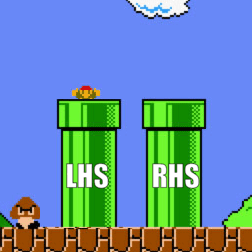
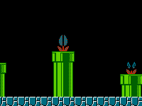

Understanding the native R pipe |>
Or, why `mtcars |> plot(hp, mpg)` doesn't work and what you can do about it.
A while back, I wrote this tweet showing many (not all!) of the ways one might search for a particular set of columns in a data frame using R. Several of these approaches used the {magrittr} pipe (%>%) and the native R pipe (|>), the latter of which has been available since R version 4.1.0. The {magrittr} and native R pipes work in different ways and one’s mental model of each requires some maintenance. This is the story of how I learned to understand the native R pipe.
How laziness sparked this post
When I am feeling lazy, I use base R for quick plots:
plot(mtcars$hp, mtcars$mpg)Because that clearly saves a lot of time compared to the {ggplot2} alternative 😄:
library(ggplot2)
library(magrittr)
mtcars %>%
ggplot(aes(x = hp, y = mpg)) +
geom_point()One day, I was feeling extra lazy, so I tried using the new native R pipe |>:
mtcars |> plot(hp, mpg)
#> Error in get(as.character(FUN), mode = "function", envir = envir) :
#> object 'mpg' of mode 'function' was not foundOh no! Why an error?
It was a complete misunderstanding of the native R pipe. I thought piping the data with the native R pipe would replace the need for the data$column notation. Turns out, that is not what the native R pipe does at all. So, this attempt to be lazy culminated in an adventuRe to figure out why that doesn’t work and what works instead.
How the {magrittr} pipe %>% works
First, let’s examine the pipe that you might be more familiar with (if you use the {tidyverse} dialect): the %>% forward pipe from the {magrittr} package.
Without any dot syntax (.), the {magrittr} pipe %>% is an infix operator that pipes (moves) what is written on the left-hand side (LHS) of the pipe into the first argument of the function on the right-hand side (RHS) of the pipe. Since R is prone to expressions with many nested parentheses, piping allows one to reason about code from left to right (as when writing in English), instead of right to left with many nested parentheses (see example below).
Before I learned case_when() 👀 pic.twitter.com/khJpueqob2
— Isabella Velásquez (@ivelasq3) December 3, 2021
From the {magrittr} documentation, the pipe’s usage is thus: LHS %>% RHS. It might be easier to think of a ‘pipe’ as one of the famous ‘warp pipes’ from Super Mario Bros. — it warps Mario from the LHS into the first argument of the RHS function!

So:
mtcars2 <-
mtcars %>%
dplyr::mutate(hi_mpg = dplyr::if_else(mpg > 25, "high", "low"))Is equivalent to:
mtcars2 <-
dplyr::mutate(mtcars, hi_mpg = dplyr::if_else(mpg > 25, "high", "low"))And,
mtcars %>% plot(hp, mpg)Is equivalent to:
plot(mtcars, hp, mpg)
# or, more explicitly
plot(x = mtcars, y = hp, type = mpg)Which does not work and gives us an error message, because the first two arguments of plot() should be objects for the x and y axes (mtcars is an odd x-axis but technically works), and the third argument is for the type of plot (mpg definitely doesn’t work there).
If you want the LHS to be passed somewhere other than the first argument with the {magrittr} pipe, you can use its dot syntax (.): y %>% f(x, .) is equivalent to f(x, y).
mtcars %>%
lm(mpg ~ hp, data = .)Is equivalent to:
lm(mpg ~ hp, data = mtcars)So, how do we get the {magrittr} pipe to work with plot()? We can use the dot syntax as a placeholder for the data frame. However, this also does not work:
mtcars %>% plot(.$hp, .$mpg)
#> Error in match.fun(panel) :
#> '.$mpg' is not a function, character or symbolWhy? The error gives a hint that something is wrong with the .$mpg step.1 By default, the {magrittr} pipe passes the LHS into the first argument of the RHS, so the call giving the error above is equivalent to writing:
plot(mtcars, mtcars$hp, mtcars$mpg)
# or, more explicitly
plot(x = mtcars, y = mtcars$hp, type = mtcars$mpg)Which does not work nor is what we intended (we want to have mtcars$hp on the x-axis, and mtcars$mpg on the y-axis). The way to get the {magrittr} pipe to do what we want with plot() is to use its curly brace {} syntax. By wrapping the RHS in curly braces, we can override the rule where the LHS is passed to the first argument:
mtcars %>% {plot(.$hp, .$mpg)}This works! It’s equivalent to having written:
plot(mtcars$hp, mtcars$mpg)OK! Now, we can apply what we’ve learned to the native R pipe. Right? …Right?
ACTUALLY I THINK WE NEED A DETOUR TO EXPLAIN ANONYMOUS (LAMBDA) FUNCTIONS BEFORE WE CAN EXPLAIN HOW |> WORKS
Why anonymous? Because they are not named functions from a package or written by you and stored in a function object. Anonymous functions are created on-the-fly, applied immediately, and don’t persist after they’ve been used: function(x) {}.
function(x) {
x[which.max(x$mpg), ]
}What does this do? It creates an anonymous function (also known as a lambda function) if it is not saved to an object.
Introduced in R 4.1, the shortcut for anonymous functions \(x) {} is the same as function(x) {}:
# equivalent to the above
\(x) {
x[which.max(x$mpg), ]
}What you gain from writing an anonymous function is that you get to direct traffic by explicitly stating the inputs and how they will be used in the function. Going back to our discussion of pipes, you get to direct exactly where the LHS of the pipe goes in the RHS.
How the native R pipe works
Like the {magrittr} pipe %>%, the native R pipe |> pipes the LHS into the first argument of the function on the RHS: LHS |> RHS.
You can write:
mtcars |> sqrt() |> head()Which is equivalent to:
head(sqrt(mtcars))On the RHS of |>, you need to include the function as a function call, which means appending an () at the end of the function name, rather than just its name. For example, the square root function is called by writing sqrt(). If you try to run mtcars |> sqrt without the () at the end, you will get an error: Error: The pipe operator requires a function call as RHS.
So, the native R pipe pipes the LHS into the first argument of the function on the RHS (with an extra requirement of needing a function call on the RHS). But that’s all! If you want to do anything beyond piping the LHS into the first argument of the RHS function, then you need the special anonymous function syntax introduced above.
A gotcha here is that we also needed to write parentheses around the anonymous function, such that a pseudocode version of the above is mtcars |> (anonymous-function-definition)(). The reason for this is so that the second set of () properly points to the complex expression inside the first set of () as the function being called.23
mtcars |> (\(x) {
x[which.max(x$mpg), ]
})()Thinking back to what we learned about the {magrittr} pipe %>%, you might be tempted to use the dot syntax (.). A final important note is that the dot syntax does not work with the native R pipe |> since the dot syntax is a feature of {magrittr} and not of base R. For example, this works:
mtcars %>% plot(.$hp)But this doesn’t because there is no support for the dot syntax with the native R pipe:
mtcars |> plot(.$hp)
#> Error in pairs.default(data.matrix(x), ...) : object '.' not foundHowever, if you create an anonymous function, you can decide what the input argument names are, whether ., x, data, anything! So, if you are tied to the dot syntax in {magrittr}, you can ‘bootstrap’ your own dot syntax with \(.) {}.
In sum, the native R pipe does not support the dot syntax unless you explicitly define your own.
Getting to the solution
Finally, we get to the solution: to get the native R pipe to do what we wanted to do with plot(), we need to use an anonymous function and bootstrap the dot syntax (or any other argument name) for ourselves:
# verbosely
mtcars |> (function(.) plot(.$hp, .$mpg))()
# using the anonymous function shortcut, emulating the dot syntax
mtcars |> (\(.) plot(.$hp, .$mpg))()
# or if you prefer x to .
mtcars |> (\(x) plot(x$hp, x$mpg))()
# or if you prefer to be explicit with argument names
mtcars |> (\(data) plot(data$hp, data$mpg))()That’s it! 🎉 It can be done, but the initial attempt to be lazy ended up taking much more time than originally expected. As the saying goes, ‘a pipe in time saves nine.’

The true lazy way
This was an exploration of how the %>% and |> pipes work, but we also have another option! The {magrittr} exposition pipe %$% ‘exposes’ the names in the LHS to the RHS expression.
So, the winner for lazy {magrittr} users like myself is:
mtcars %$% plot(hp, mpg)No dot syntax, no curly braces, no anonymous functions, no terminal function call, just a pipe and column names! It effectively emulates how plot() would work if it were a {tidyverse} function.
Really though, all pipe users are winners here! As shown in the alignment chart tweet, we have many options of doing what we want to do with R.
I couldn't resist getting in on the fun, updated for R >= 4.1, created using {gt}! h/t @skyetetra #rstats #tidyverse #magrittr #alignmentchart
— Isabella Velásquez (@ivelasq3) June 15, 2021
Repo here: https://t.co/gjGWLKYYG5 pic.twitter.com/1Ez6eQKkGd
More resources
- {magrittr} forward pipe operator help documentation (or
?"%>%"in your R console) - Forward pipe operator help documentation (or
?pipeOpin your R console) - Functions chapter in Advanced R
Extra credit for those who made it this far
How would you do this with the proposed native R pipe-bind => syntax? Respond to my tweet about this blog post once you have the answer!
New blog post 👩🏻💻📝 Understanding the native R pipe |>
— Isabella Velásquez (@ivelasq3) January 18, 2022
In this post, I attempted the native R #pipeoperator and was warped into the RHS, and emerged from my misadventuRe having learned all about the #magrittr and #rstats pipes.
Post: https://t.co/VOC1C6WGvl pic.twitter.com/IDAHvwyE4K
Acknowledgements
The author thanks Gustavo E. for his comments on the first draft of this blog post.
Footnotes
Running the same line without that argument,
mtcars %>% plot(.$hp), does run without an error (but is not the plot that we want since it is usingmtcarsas the first argument, as mentioned above).↩︎Curly braces for the first expression,
{}(), work too:mtcars |> {\(x) {x[which.max(x$mpg),]}}(). See Ronak Shah’s reply in this StackOverflow thread for an example.↩︎Or for more on this, see Q2 and its answer in the ‘Functions’ chapter of Advanced R Solutions.↩︎